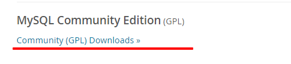

--
mysql安装
--

终端执行命令

（可参考本笔记MySQL环境搭建-mysql 8.0.13 解压版安装配置方法图文教程）
mysql 教学demo --命令行输指令创建表

数据库tysql关系图

--
概念
--
数据库：保存有组织数据的容器
数据库软件：也作DBMS，数据库是通过DBMS来创建和操纵的容器。
表table：某种特定类型的结构化清单。数据库中的每个表都有唯一的名字来标识自己，称之为表名。
模式schema：用来描述关于数据库和表的布局及特性的信息。
表的列column：表中的一个字段，所有表都是由一个或多个列组成的。
行row：表中的一条记录。record
主键primary key：一列或几列，其值能够唯一标识表中的每一行。不能重用，不允许修改和更新，即使某行从表中删除，他的主键也不能赋给以后的新行。
数据类型datatype：所允许的数据的类型，每个表列都有相应的数据类型，它限制该列中存储的数据。
--
ch2 检索数据
--
查询
SELECT 列1， 列2 FROM 表；
一般习惯：关键是大写，列名和表名使用小写。
所有空格都被忽略。即SQL可以写一行也可以多行。不区分大小写，不论关键字还是表名列名。


SELECT DISTINCT vend_id FROM Products; --仅显示不同项，DISTINICT必须放在列名的前面,否则无效（不会报错，仅DISTINICT不生效，SELECT正常执行）


SELECT DISTINCT vend_id FROM Products LIMIT 2; --限制仅输出查询的两行，不同数据库软件对于指令略有不同

SELECT prod_id FROM Products LIMIT 3 OFFSET 1;--从OFFSET开始查询最多3行，OFFSET为起点坐标（从0开始计数）


注释
-- 注释内容 两个连字符和注释之间有至少一个空格符，否则语法错误

#注释内容，没有空格要求

/*注释内容*/ 可以进行多行注释，没有空格要求

--
ch3 排序检索数据
--
SELECT prod_name FROM Products ORDER BY prod_price; -- 按物品价格排序，默认从低到高，必须是SELECT中最后一条语句，否则报错。

SELECT prod_name,prod_price FROM Products ORDER BY prod_price,prod_name; --先按价钱再按名称排列（分两次排列）

SELECT vend_id,prod_name,prod_price FROM Products ORDER BY 3,1 DESC; --先按第3列再按第1列排序（从0开始算，一般调试使用）

SELECT prod_name,prod_price FROM Products ORDER BY prod_price DESC,prod_name DESC; --降序排序，不同列名需要分别添加DESC才有效果。

--
ch4 过滤数据
--
SELECT prod_name,prod_price FROM Products WHERE prod_price = 9.49; --匹配价格为9.49的产品


WHERE子句操作符
常用的比较操作符
不等于 <> 或者 ！=
不大于 !>
在指定的两个值之间 BETWEEN
是NULL值 IS NULL
NULL 它与字段包含0、空字符串或仅仅包含空格不同
eg. SELECT prod_name,prod_price,vend_id FROM Products WHERE vend_id != 'BRS01';


SELECT cust_name,cust_email FROM Customers WHERE cust_email IS NULL;--筛选NULL值


--
ch5 高级数据过滤
--
SELECT prod_name,prod_price,vend_id FROM Products WHERE vend_id = 'DLL01' AND prod_price = 3.49;

OR操作符
当OR WHERE子句的第一个条件得到满足时，就不再计算第二个条件了（原文这样写，不太明白）
感觉取的是两个条件的并集。打印如下


优先级 AND > OR


IN操作符：
优点：
清楚直观。
求值顺序便于管理，相对于AND OR来说。
执行效率比OR高。
最重要的是能够包含其他SELECT语句。

NOT操作符，条件取反操作。
MariaDB 支持使用NOT否定IN、BETWEEN和EXISTS子句。大多数DBMS允许使用NOT否定任何条件。
SELECT prod_name,vend_id FROM Products WHERE vend_id NOT IN ('DLL01', 'BR01') ORDER BY prod_name;

--
ch6 用通配符进行过滤
--
LIKE操作符--匹配搜索、复杂过滤
LIKE ‘%’表示任何字符出现任意次数。有些DBMS使用*表示。
%可以匹配任何字符，但有一个例外，就是NULL。


LIKE ‘_’ 表示只匹配单个字符。

方括号[] 通配符 用来指定一个字符集合。它必须匹配指定位置的一个字符。（不生效，暂时未扎到原因）

--
ch7 创建计算字段
--
字段（filed）：基本上与列（column）意思相同。
TRIM,RTRIM,LTRIM函数在MYSQL中无效。
下面返回元素的一个列即为计算字段。连接字符串用函数CONCAT

用AS方便命名返回后 的列名（计算字段）

执行计算命令

如何测试计算，直接用SELECT


--
ch8 使用函数处理数据
--

#找发音相似的客户
SELECT cust_name,cust_contact FROM Customers WHERE SOUNDEX(cust_contact)= SOUNDEX('Michael Green');

SELECT order_num,order_date FROM Orders WHERE YEAR(order_date) = 2012;--筛选年份为2012的订单号

数字处理函数

--
ch9 汇总数据
--
聚集函数：对某些行运行的函数，计算并返回一个值。
基本的一些聚集函数，计算平均值，计数，最大值，最小值，求和。
COUNT（*） 对所有行计数，包括NULL行。如果指定列名，则会忽略NULL行。
聚集函数用来汇总数据，这些函数很高效，返回结果比在客户端应用程序中计算要快的多。


指定不同价格求平均

--
ch10 分组数据
--
按给定的分组返回对应组的计算字段。

GROUP BY子句使用注意：
a 支持嵌套，数据将在最后指定的分组上进行汇总。（建立分组时，指定的所有列都一起计算）
b 子句接收的每一列必须是检索列或是有效的表达式，不能是聚集函数。如果SELECT中使用表达式，则必须在GROUP BY子句中指定相同的表达式。
c 不允许GROUP BY列带有长度可变的数据类型（如文本或备注型字段）
d 如果分组中包含NULL值的行，则NULL作为一个分组返回。若列中有多个NULL值的行，它们将分为一组。
e GROUP BY 必须出现在WHERE子句之后，ORDER BY子句之前。
WHERE过滤行，而HAVING过滤分组。（匹配）HAVING支持所有的WHERE操作符。
WHERE在数据分组前对数据进行过滤，而HAVING在数据分组后对数据进行过滤。

--
ch11 子查询
--
查询（query）任何SQL语句都是查询。但此术语一般指SELECT语句。
子查询（subquery）：SQL允许创建子查询，即嵌套在其他查询语句中的查询。查询嵌套
查询产品id为'RGAN01'的所有订单用户

注意：
a 作为子查询的SELECT语句只能查询单个列。否则报错。

b 子查询和性能：使用子查询并不总是执行这类数据检索的最有效方法。
作为计算字段使用子查询--显示Customers表中每个顾客的订单总数：（注 红色部分需要两张表都在from后面才能使用，否则只能找到其中一张表）

--
ch12 联结表 --join
--
思考：如果数据存储在多个表中，怎样用一条SELECT语句就检索出来呢？
联结是一种机制，用来在一条SELECT语句中关联表，因此称为联结。
关系表：
关系表的设计就是要把信息分解成多个表，一类数据一个表。各表通过某些共同的值互相关联，所以也叫关系数据库。
将数据分解为多个表能够更有效地存储，更方便地处理。
创建联结：指定要联结的所有表以及关联他它们的方式即可。


笛卡尔积：没有联结条件（上面的where），则返回的是第一张表A和第二张表B的每一行匹配（AXB），我们称之为笛卡尔积。


注：笛卡尔积不是我们想要的，这里返回的数据每个供应商都匹配了每个产品，包括供应商根本没有的产品。要保证所有联结都有正确的where语句，否则DBMS将返回比你想要的数据多得多的数据。
叉联结：有时返回笛卡尔积的联结，也称叉联结（cross join）--暂时未涉及
内联结：目前为止使用的联结为等值联结，它是基于两个表之间的相等测试。这种联结也称为内联结。稍微不同的语法：
select T1col, T2col
form T1 join T2
on T1.id = T2.id

联结多个表：（注：联结的表越多，性能下降的越厉害。虽然SQL本身不限制每个联结约束中表的数目，但是实际上许多DBMS都会有限制）


注：上述查询的值来自3个表，没有限定，但是后面的where加了限定条件，若不加where将返回笛卡尔积。
--
ch13 创建高级联结
--
使用表别名
mysql使用as（oracle中没有as），用来缩短SQL语句，允许在一条SELECT语句中多次使用相同的表

使用不同类型的联结
内联结：inner join
自联结：self join （在select语句中不止一次引用相同的表）
自然联结：natural join （标准的联结返回所有数据，相同的列甚至出现多次，自然联结排除多次出现，使每列只返回一次）
外联结：outer join （许多联结将一个表中的行与另一个表中的行相关联，但有时候需要包含没有关联行的那些行。举个例子，对每个顾客下的订单数进行技术。包括那些至今尚未下订单的顾客，列出所有产品以及订购数量，包括没有人订购的产品，计算平均销售规模，包括那些至今尚未下订单的顾客）
自联结：（许多DBMS处理联结的效率要远高于处理子查询）


自然联结：
SELECT C.*, O.order_num, O.order_date, OI.prod_id, OI.quantity, OI.item_price
FROM Customers AS C, Orders AS O, OrderItems AS OI
WHERE C.cust_id = O.cust_id
AND OI.order_num = O.order_num
AND prod_id = 'RGAN01';
+------------+---------------+---------------------+-----------+------------+----------+------------
--+--------------------+-----------------------+-----------+---------------------+---------+--------
--+------------+
| cust_id | cust_name | cust_address | cust_city | cust_state | cust_zip | cust_countr
y | cust_contact | cust_email | order_num | order_date | prod_id | quantit
y | item_price |
+------------+---------------+---------------------+-----------+------------+----------+------------
--+--------------------+-----------------------+-----------+---------------------+---------+--------
--+------------+
| 1000000004 | Fun4All | 829 Riverside Drive | Phoenix | AZ | 88888 | USA
| Denise L. Stephens | dstephens@fun4all.com | 20007 | 2012-01-30 00:00:00 | RGAN01 | 5
0 | 4.49 |
| 1000000005 | The Toy Store | 4545 53rd Street | Chicago | IL | 54545 | USA
| Kim Howard | NULL | 20008 | 2012-02-03 00:00:00 | RGAN01 |
5 | 4.99 |
+------------+---------------+---------------------+-----------+------------+----------+------------
--+--------------------+-----------------------+-----------+---------------------+---------+--------
--+------------+
2 rows in set (0.00 sec)
外联结：
外联结一定要标明是是LEFT还是RIGHT 联结，否则报错。left表示与左边的做基准进行索引，right表示用右边的做基准进行索引，索引的那一列均不包含null这个值，其他列包括。


--
ch14 组合查询
--
组合查询：SQL执行多个SELECT查询，并将结果作为一个查询结果集返回。这些组合查询通常称为并（union）或符合查询。
举个例子（列必须相等）

列不相等的情况

UNION默认会合并重复的行，若要显示所有行（包含重复的行），可以使用UNION ALL替代UNION

对组合查询结果排序
在用UNION组合查询时，只能使用一条ORDER BY子句，它必须位于最后一条SELECT语句之后。
--
ch15 插入数据
--
INSERT将行插入数据库，插入的几种方式：
- 插入完整的行
- 插入行的一部分
- 插入某些查询结果

INSERT INTO Customers(cust_id,
cust_name,
cust_address,
...) -- 添加列名（字段），虽然繁琐一些，但比上述例子要安全很多，并且表结构顺序改变，也不会影响值得插入
VALUES( '1000000006',
'Toy Land',
'123 Any Street',
'New York',
'NY',
'1111',
'USA',
NULL,
NULL)
省略列：如果表定义允许，则可以在INSERT中省略某些列，省略列必须满足以下某个条件：
a 该列定义为允许NULL值（无值或空值）
b 该表定义中给出默认值。当没有值插入时，将使用默认值。
插入检索出的数据
INSERT Customers(cust_id,
cust_contact,
cust_email,
...)
SELECT cust_id,
cust_contact,
cust_email,
...
FROM CustNew;
从一个表中复制另一个表

--
ch16 更新和删除数据
--
更新数据格式：
UPDATE Customers
SET cust_email = 'eamli@xx'
WHERE cust_id = '1000000006';
删除数据格式：
DELETE FROM Customers --FROM在有些DBMS中是可选的，建议使用时最好带上这个关键字，保证语句的可移植性。
WHERE cust_id= '1000000006' --不要省略WHERE语句，一不小心就会删除所有行
DELETE语句从表中删除行，甚至是删除表中的所有行。但是，DELETE不删除表本身。
更快的删除：如果想从表中删除所有行，不要使用DELETE。可使用TRUNCATE TABLE语句，它完成相同的工作，而速度更快（因为不记录数据的变动）。
--
ch17 创建和操纵表
--
表创建基础

数据类型后面不指定NOT NULL，则默认为NULL（有些DBMS可能必须指定）
主键和NULL值
主键是唯一表中某一行的列。只有不允许NULL值的列可作为主键，允许NULL值得列不能作为唯一的标识。
NULL和空字符
NULL值是没有值，不是空字符串，空字符串是一个有效的值，它不是无值。NULL值用关键字NULL而不是空字符串指定。
指定默认值：

注：默认值经常用于日期或是时间戳。例如通过引用系统日期的函数或变量，将系统日期用作默认日期。MYSQL用户指定DEFAULT CURRENT_DATE()。
获得系统日期
DBMS | 函数或变量 |
ACCESS | NOW() |
DB2 | CURRENT_DATE |
MySql | CURRENT_DATE() |
Oracle | SYSDATE |
prostgreSQL | CURRENT_DATE |
SQL Server | GETDATE() |
SQLite | date('now') |
更改表ALTER TABLE
更改表的定义（理想情况下，不要再表中包含数据时对其进行更新，应该在表的设计过程中充分考虑未来的可能需求，避免今后对表的结构做大的改动）
举个例子 增加一列
ALTER TABLE Vendorse
ADD vend_phone CHAR(20);
# 删除列
ALTER TABLE Vendorse
DROP COLUMN vend_phone;
# 删除表
DROP TABLE custCopy
重命名表操作的基本语法都要求制指定新表和旧表，不同的DBMS实现存在差异。参阅DBMS文档。
--
ch18 使用视图
--
视图：视图是虚拟的表，与包含数据的表不一样，视图只包含使用时动态检索数据的查询。
使用视图原因：
a 简化复杂的操作。
b 使用表的一部分而不是整个表。
c 保护数据 可以授予用户访问表的特定部分的权限，而不是整个表的访问权限。
d 更改数据格式和表示。视图可返回与底层表的表示和格式不同的数据。
注：
视图必须唯一命名（不能与别的视图或是表同名）
对于可以创建的视图数目没有限制
创建视图需要足够的访问权限
视图可以嵌套（可能会严重影响性能，需要进行全面测试）
许多DBMS禁止在视图查询中使用ORDER BY子句
有些DBMS要求对返回的所有列进行命名，如果列是计算字段，则需要使用别名
视图不能索引，也不能有关联的触发器或默认值
有些DBMS把视图作为只读查询，这表示可以从视图检索数据，但不能将数据写回底层表。
有些DBMS允许创建这样的视图，它不能进行到这行不再属于视图的插入或更新。
举例说明：
SELECT cust_name, cust_contact
FROM Orderitems,Orders,Customers
WHERE customers.cust_id = orders.cust_id
AND orders.order_num = orderitems.order_num
AND prod_id = 'RGAN01';
假如可以把整个查询包装成一个名为ProductCustomers的虚拟表，那么输入就可以简化为
SELECT cust_name, cust_contact
FROM ProductCustomers
WHERE prod_id = 'RGAN01';
创建视图CREATE VIEW
与创建表一样，只能用于创建不存在的视图
视图重命名
删除视图，可以使用DROP语句，其语法为DROP VIEW viewname；。覆盖（或更新）视图，必须先删除它，然后再重新创建。
举个例子：

视图用来简化复杂的数据处理

--
ch19 使用存储过程 --无MYSQL示例，待深入研究
--
存储过程：存储过程就是为以后使用而保存的一条或多条SQL语句。可以将其视为批文件，虽然它的作用不仅限于批处理。
优点：简单、安全、高性能。
缺点：可移植性差，不同DBMS种存储过程的语法有所不同。事实上，编写真正的可移植性存储过程几乎是不可能的。
执行存储过程：
EXECUTE AddNewProduct('JTS01',
'Stuffed Eiffel Tower',
6.49,
'Plush stuffed toy with the text LaTour Fiffel in red white and bule')
这里执行一个名为AddNewProduct的存储过程，将一个新产品添加到Products表中。
注：Products表中还有另一个需要值得列prod_id列，它是这个表的主键。为何这个值不作为属性传递给存储过程？这是为了保证恰当的生成此ID，最好是使生成此ID的过程自动化（而不是依赖于最终用户的输入）。
创建存储过程：（ORACLE）
CREATE PROCEDURE MailingListCount(
ListCount OUT INTEGER
)
IS
v_rows INTEGER;
BEGIN
SELECT COUNT(*) INTO v_rows FROM Customers WHERE NOT cust_email IS NULL;
ListCount := v_rows;
END;
--
ch20 管理事务处理
--
事务处理：事务处理是用来管理必须成批执行的SQL操作，保证数据库不包含不完整的操作结果。利用事务处理，可以保证一组操作不会中途停止，它们要么完全执行，要么完全不执行（除非明确指示）。如果没有错误发生，整组语句提交给（写入）数据库表；如果错误发生，则进行回退（撤销），将数据库恢复到某个已知且安全的状态。
使用事务处理，通过确保成批的SQL操作要么完全执行，要么完全不执行，来维护数据库的完整性。
假设数据库方式故障（如超出磁盘空间、安全限制、表锁等），导致订单插入失败，或者数据库存在不完整的订单，而你还不知道。如何解决这个问题？这就需要使用事务处理了。
几个术语：
事务：只一组SQL语句
回退：指撤销指定SQL语句的过程
提交：将为存储的SQL语句结果写入数据库表
保留点：指事务处理中设置临时占位符，可以对它发布回退（与回退整个事务处理不同）
事务处理用来管理INSERT UPDATE DELETE 语句。不能回退SELECT语句（没必要回退），也不能回退CREATE DROP操作。事务处理中可以使用这些语句，进行回退时，这些操作也不撤销。
--
ch21 使用游标
--
简单地使用SELECT语句，没有办法得到第一个行、下一行或是前10行。这时候游标就起作用了。
游标：一个存储在DBMS服务器上的数据库查询，它不是一条SELECT语句，而是被该语句检索出来的结果集（SQL查询所检索的所有结果）
游标常见的一些选项和特性：
能够标记游标为只读，使数据能读取，但不能更新和删除。
能控制可以执行的定向操作。
能标记某些列为可编辑的，某些列为不可编辑的。
规定范围，使游标对创建它的特定请求（如存储过程）或对所有请求可访问。
指示DBMS对检索的数据进行复制，使数据在游标打开或访问期间不变化。
创建游标：

--
ch22 高级SQL特性
--
主键、外键、约束、索引、触发器一些概念